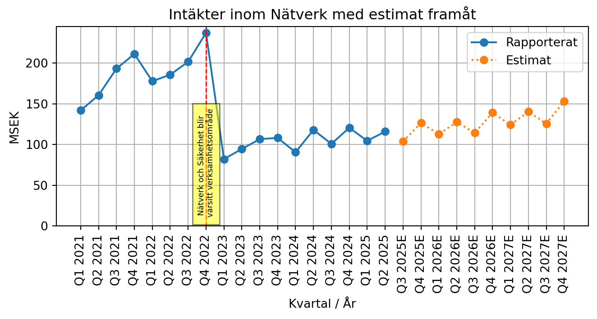
Aktiecase Enea
aktieanalys
bolagsanalys
aktiecase
Hackor och spadar till teleoperatörer och CPaaS-leverantörer. Turnaround som troligen har vänt, men är det för tidigt att gå in redan nu?
NoteDisclaimer
Tänk på att investeringar alltid innebär ett risktagande. Gör alltid din egen analys innan eventuell handel.
CautionEget ägande
Jag äger aktier i Enea
Bakgrund
Enea säljer hackor och spadar till teleoperatörer och CPaaS-leverantörer i form av mjukvara inom nätverk och säkerhet. Bolaget grundades 1968 och var huvudsakligen en konsulttjänst som sedan utvecklades till ett operativt system som användes i Ericsson och Nokia. Enea har över tid förvärvat ett handfull bolag som Qosmos, Openwave Mobility, Aptilo Networks, and AdaptiveMobile Security - bolag som idag är grunden till den verksamhet som Enea jobbar med idag. Operativ system är under nedläggning och står för 10% av omsättningen. Visionen är att göra världens kommunikation säkrare och mer effektiv genom innovation. Enea levererar till över 160 kommunikationstjänstleverantörer i mer än 100 länder, och fler än 3 miljarder människor är dagligen beroende av Eneas teknik. Enea har sitt huvudkontor i Stockholm och är börsnoterat på NASDAQ Stockholm.
Finansiell målsättning
2025 räknar Enea med att stabilisera sin verksamhet och generera en EBITDA marginal som är runt 30 procent. Framåtblickande ska nätverk och säkerhet växa med 10 procent vardera med starka kassaflöden.
Verksamheten
Huvudsakliga verksamheten är att erbjuda tjänster för nätverk och cybersäkerhet som tillsammans står för 90 procent av omsättningen. Produkterna syftar till att hantera trafiken i nätverken på olika sätt: minimera spam, säkerställa regelefterlevnad, höja säkerheten och bevakning av nätverken i stor skala oavsett vilket protokoll som kommunikationen sker över. Enea är partner till kunder som tillsammans har över 30% av världens mobila abonnemang. Det är möjligt för dessa att göra tjänsterna själva, men det i sin tur kräver ett stort arbete att utveckla och drifta ett sådant system, därför är det lättare för teleoperatörerna att köpa in dessa brandväggar, realtidsanalyser och andra tjänster från bolag som Enea. För Enea innebär det att många kan använda samma säkra lösning i många nätverk och för teleoperatörerna och CPaaS-tjänster kan de fokusera på sin kärnverksamhet.
“We make the world’s communications safer and more efficient” - Eneas vision
Enea erbjuder produkter som är proaktiva och aktiva, alltså dels produkter som agerar innan en attack äger rum (brandväggar/initialt skydd) och aktiva produkter som skannar av nätverket för suspekt trafik som är inom nätverket. För att detta ska bli bra är det viktigt att Enea har en produkt som är enastående stark, ett bra track record och att den är tillräcklig billig för att det inte ska vara värdet för teleoperatörer att bygga liknande tjänster in-house. Med dagens cybersäkerhetsläge där utvecklingen går snabbare bäddar det för att allt fler bör vilja luta sig mot någon annan som är expert inom fältet istället för att försöka bygga något robust själva.
Varje dag analyseras över 3 miljarder meddelanden
I framtiden bedömer Enea att analysen av datatrafiken går att göra mer sofistikerad med artificiell intelligens. Min take är att det är viktigt att den är etisk och att Enea med sin svenska härkomst kan bistå med en stark analys produkt tror jag gör det lättare att skapa förtroende för kunder och slutkunder. Även fast det kan finnas andra som har en liknande eller bättre produkt är det ett förtroende som måste existerar för att kunderna ska vilja samarbeta, Eneas långa track record och integration i nätverken öppnar den dörren till skillnad från ett helt nystartat bolag inom nischen.
Intäkter per segment

Vi ser ett skifte till licensbaserade intäkter som kan klassas som återkommande
Nätverk
Nätverk är att tänka sig något som liknar det som posten gör, tänk dig att du har en person som skickar ett brev till en annan person. Det brevet ska då skickas, hamnar sedan på en sorteringscentral där brevet skickas vidare till den personen som ska ta emot brevet. Enea är sorteringscentralen i nätverket, de tittar på vem det är som skickar, vem det är som ska ta emot informationen, tittar på om informationen innehåller länkar eller andra bifogade filer så fall kommer Enea att göra en skanning av dessa länkar/filer för att göra nätverket säkert.
Enea är sorteringscentralen i nätverket
Enea jobbar för att motverka bedrägerier i samhället genom telekommunikation. Det är en extremt stor marknad, med hundratals miljarder som förkringras varje år. Polisen i Sverige rapporterar att bedrägerier i Sverige genererar 6,4 miljarder för brottslingar och är den största inkomstkällan. Bedrägerier är ett stort problem runt om i världen och telekommunikation är en av de viktigaste kanalerna för att möjliggöra brotten.
Ett konkret exempel på värdeskapande för Enea är runt år 2019 när Egypten hade ett enormt problem för sin spam inom nätverket. Kunderna lämnade nätverket, nationens tillsynsmyndigheter flaggade för att de måste åtgärda sina problem i nätverket. 8% av rösttrafiken i Egypten var spam, när Enea åtgärdat problemet var problemet mindre än 1 procent av all trafik i nätverket.
Enea gjorde ett annat projekt i Afrika är de använder en brandvägg för att säkerställa att företag betalar rätt rate för sin trafik till slutkund. utan Enea var det inte möjligt för telecom nätverket att ta ut rätt rate mot sina kunder, många företag tidigare skickade sina meddelanden till slutkund genom att skicka via nätverket som är till för privatpersoner. Nu är det åtgärdat och telekomoperatören får betalt så som det är tänkt och slutkunderna får också en bättre upplevelse när de meddelande som kommer fram inte är spam samt att tillsynsmyndigheten har bättre information att basera beslut på.
8% av rösttrafiken i Egypten var spam, när Enea åtgärdat problemet var problemet mindre än 1 procent av all trafik i nätverket
Enea hjälper sina kunder att följa sin regelefterlevnad som de har mot sina kunder och mot företag. Ibland är det regler som är inom nationen, ibland är det regler som nätverket själva har satt för sig. Exempelvis så kan det finnas regler att det inte är ok att skicka reklam sms under natten, men det är okej under dagen, Enea kan hjälpa till att säkerställa att det efterlevs. Utan regelefterlevnad är det risk att få böter från myndigheter eller att tappa intäkter från kunder när de använder ett felaktigt abonnemang.
Se John Hughes presentera Eneas Network segment:
Finansiell utveckling nätverk
I Q4 2022 delades Nätverk och säkerhet till varsitt område. Sedan Q1 2023 till Q2 2025 så har nätverk växt med 6.2% i snitt per år. Framåt skissar jag på att Nätverk konvergerar mot sitt långsiktiga mål på 10 procent per år.
Year-over-year growths
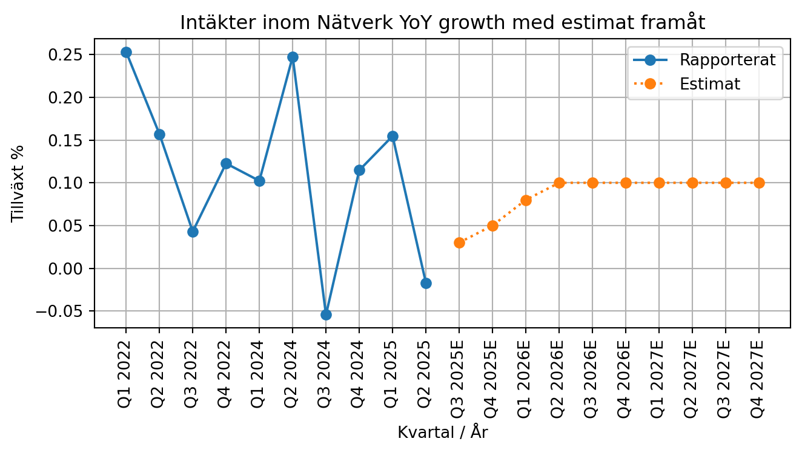
Tillväxten för Nätverk är ganska slagig då historiskt har varit projektbaserad, men mer och mer går över till återkommande intäkter senaste kvartalen. Framåt tror jag att det finns bra anledning att tro att den stabiliseras på en högre tillväxt, när kontrakt som Enea vunnit tidigare börjar visa sig i siffrorna.
Säkerhet
Säkerhet handlar om att skapa säkerhet i nätverket, genom bland annat brandväggar och något som klassas för deep-package inspection (DPI). Detta innebär att Enea granskar länkar, bifogade filer och video som skickas i nätverket för att identifiera suspekt trafik och hot.
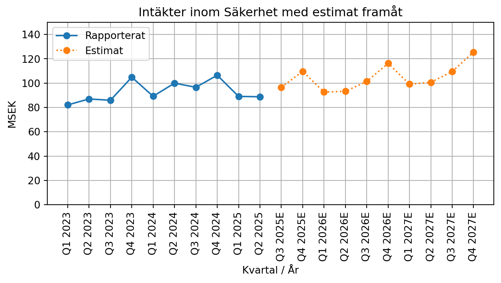
Säkerhet har växt med 2.8 procent per år sedan Q1 2023 fram till Q2 2025. Säkerhet som segment har inte gått lika bra som nätverk och framåt är det svårt att göra en prognos. Trots det väljer jag att skissa in en konvergering mot målet på 10 procent och landar runt 8 procent omsättningstillväxt efter Q3 2026.
Year-over-year growths
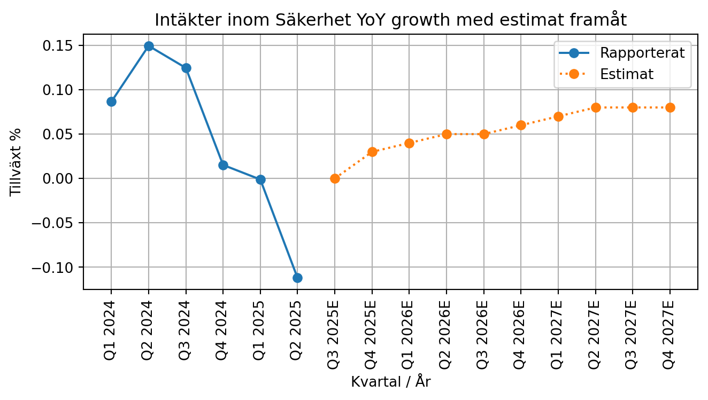
Jämfört med förra årets Q2 krypte Eneas säkerhetssegment.
Operativsystem
OS, Eneas tidigare huvudverksamhet, är nu en liten del av verksamheten. Jag skissar på att verksamheten tappar ca 10 procent av omsättningen per år. OS är ca 17 procent av Eneas EBITDA.
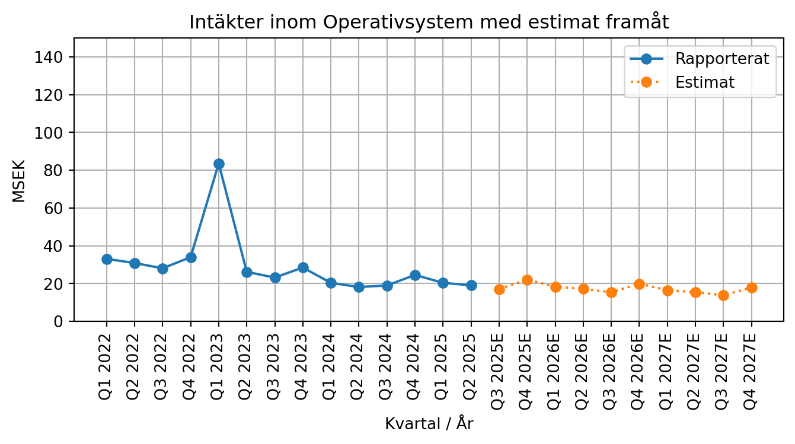
Stabilt krympande verksamhet inom OS.
Year-over-year growths
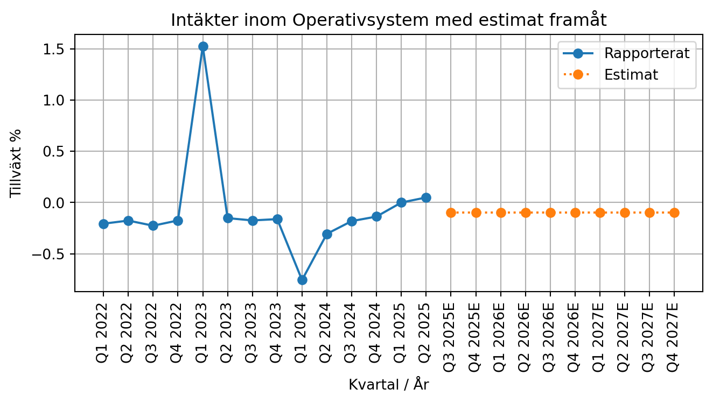
Reflekteras även i de YoY tillväxtsiffrorna.
Marknaden
Marknaden är inte helt självklar, men det är förstås ett flertal som gör liknande grejer, fast inte är lika specialiserade. Min bedömning är att Enea har varit på sin marknad länge och troligen finns det inte så många nya bolag som kommer in för att försöka ta marknadsandelar utan den präglas av drakar som blir allt äldre och långsammare med tiden. Enea är ett litet och specialiserat bolag med ett tillräckligt bra rykte för att attrahera stora kontrakt hos operatörerna inom de nischer som operatörerna själva inte vill verka inom.
Konkurrenter
Huvudkonkurrenten verkar vara Wind River, men det verkar inte som att det är ett så stort problem för Enea. Utan att göra en gedigen konkurrentspaning landar jag i att Enea har tillräckligt bra marginaler som talar för att Enea har en bra position på marknaden och löper ingen risk att tappa denna på kort sikt.
Ledning och styrelse
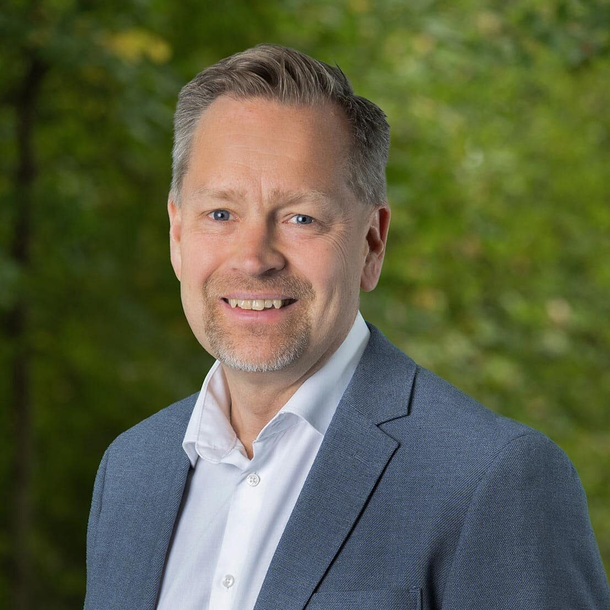
I november 2024 utsåg styrelsen i Enea AB Teemu Salmi till ny vd och koncernchef för Enea AB med start från den 1 april 2025. Teemu Salmi kommer närmast från nordiska cybersäkerhetsleverantören Nixu, där han tillträdde som VD 2022 och som sedan dess har förvärvats av DNV. Teemu Salmi har tidigare haft ledande befattningar inom Ericsson och Stora Enso, där han har lett internationella säljorganisationer samt kommersiella och tekniska organisationer, inklusive flera år i Mellanöstern och Afrika. Med sin gedigna bakgrund inom telekom och cybersäkerhet och sina personliga egenskaper har Teemu Salmi den nödvändiga erfarenheten och kompetensen för att bli vd för Enea och att framgångsrikt leda bolagets fortsatta utveckling och skapa värden för kunder, anställda och aktieägare.
Mest imponerad är jag av Osvaldo som är CTO sedan mars 2024, han har tidigare jobbat med sälj och är väldigt bra på att förklara hur Eneas teknik fungerar.
Aktien & ägare
Aktien
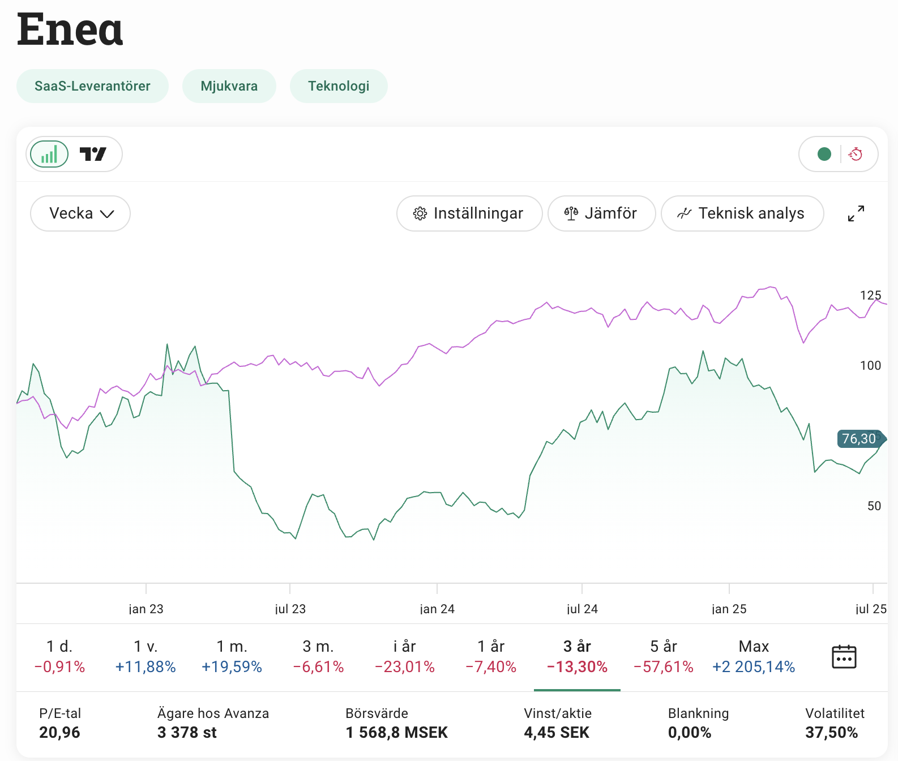
Aktien är noterad på mid cap. Enea genomför ett återköpsprogram och köper tillbaka ca 1,2 miljoner aktier om året, totalt är mandatet på 100 miljoner SEK under ett år. Det går att se att antalet aktier drar ihop sig snabbt.
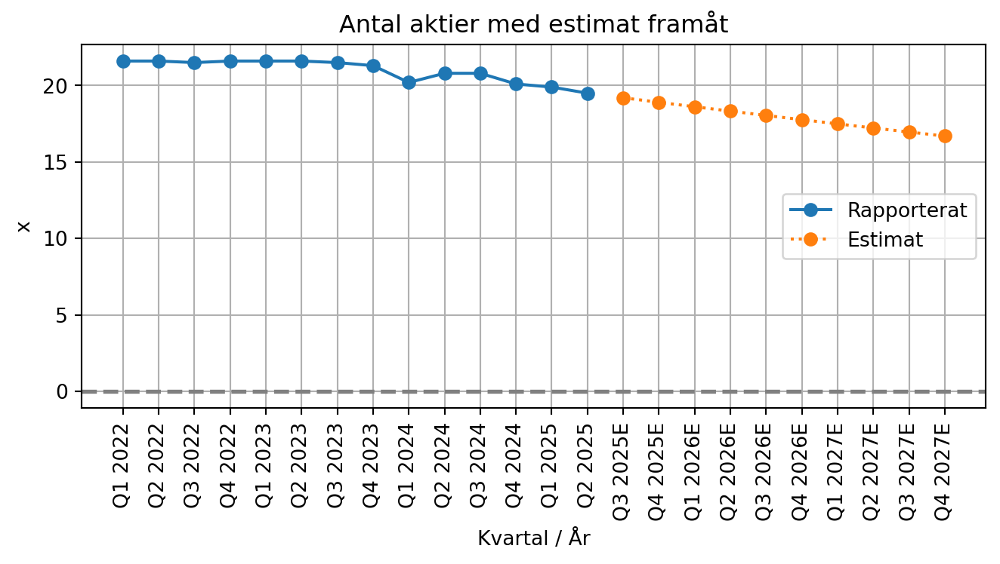
Trenden lär fortsätta, jag tror att det kommer att fortgå tills Salmi har fått en bra känsla för bolaget och kommer att allokera pengarna på något annat vis, exempelvis förvärv eller utöka capex inom befintlig verksamhet.
Ägare
Per Lindberg är största ägare i Enea med ca 30 procent av rösterna och kapitalet, Han äger även runt 88 procent av Ranplan Wireless där han själv är vd. Utöver det äger han nästan 4 miljoner Ericsson aktier som har ett värde på 274 miljoner sek.
Per Lindberg är främst känd inom finanskretsarna som en haussare av Ericsson, det verkar ha hängt kvar länge och han tar inte mycket plats längre i media. I ägarlistan finns en Mats Lindberg som verkar ha ursprung från Danmark, det går inte att tyda på ett enkelt sätt om han har en relation till Per Lindberg.
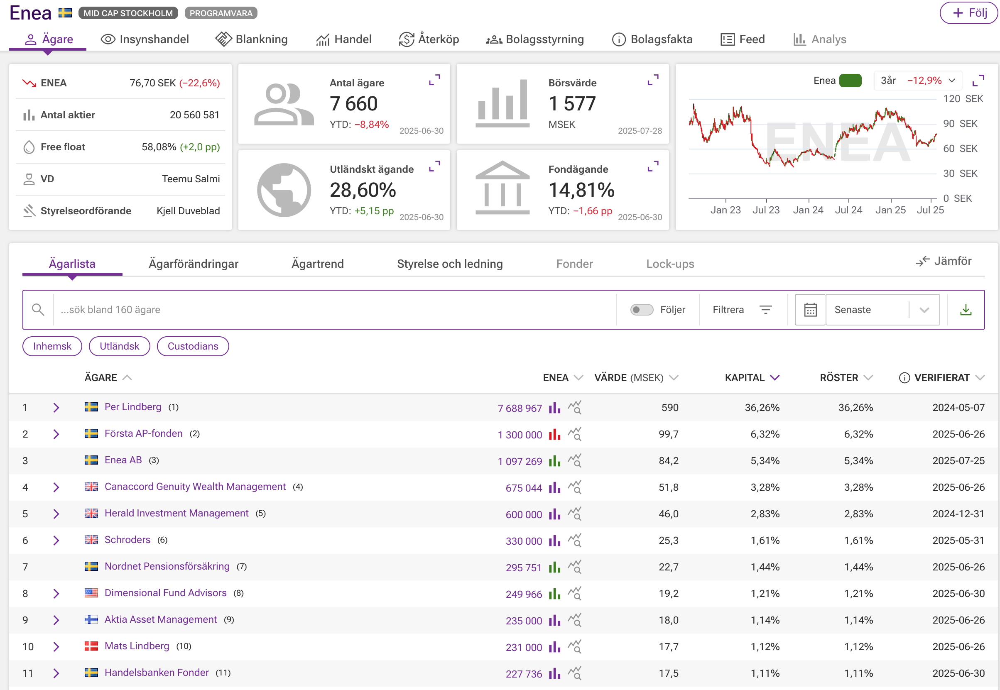
Insynsägandet är väldigt lågt. Salmi har köpt 11500 aktier till ett värde av 880 tkr, inte helt obetydligt men förstås på tok för lite för att räknas som signifikant. Inga insynsköp som är av betydelse under den senaste tiden. Tidigare vd, Anders Lidbeck, äger fortfarande aktier som har ett värde på 4 miljoner. Helt ok ägarbild, givet att Per Lindberg gör ett bra arbete, han sitter i dagsläget i valberedningen.
Risker
Kort historik gör att det är svårt att vara helt säker på att värdet som estimeras framåt faktiskt kommer att infria sig. Operativt har bolaget inte haft så stabila kvartal bakom sig och det skapar en osäkerhet för investerare. Denna osäkerhet är inprisad. Historiken med ny vd är förstås också kort och är därmed en risk. Från mitt perspektiv anser jag att Salmi har gjort ett gott intryck initialt och har den kapacitet som krävs för att levererar på det som Enea har som mål.
Misslyckade produktsatsningar, Enea har tidigare gjort produktsatsning tillsammans med en annan kund som innebar en enorm nedskrivning i Q2 2023, vilket innebar att gamla vd fick avgång och en tf vd tillsattes. Förlusten var enorm försvann helt, bolaget blev betydligt mindre och förtroendet gick upp i rök. Det finns förstås alltid en risk att detta kan ske igen, men antagligen är alla lik ute ur garderoben nu när tf vd har fått möjlighet att städa upp bolaget.
Vad är framtida ROE/ROIC? Vi känner inte till vad 100 miljoner nya friska pengar skulle göra för nytta i Enea. I dagsläget spenderar bolaget pengarna på återköp, men kan Enea investera dessa pengar och generera nya kassaflöden? Vad är avkastningen på dessa? Med ny vd och ny strategi är dessa faktorer osäkra.
Enea är byggt på förvärv, bolagen inom Enea verkar inte helt streamlinade eller synkade med ways of working. Kan det leda till rörlig kundupplevelse? Även fast detta är sant behöver det inte vara ett problem.
Korruptionsrisk, Enea är aktiv på marknader inom mellanöstern och afrika som har relativt höga korruptionsrisker jämfört med länder i västvärlden. Det finns en viss risk att det kommer fram att Enea har använt sig av processer som inte är av högsta standard i vad som förväntas av ett svenskt bolag. Detta behöver inte vara ett problem och är något som princip alla bolag som är verksamma globalt har att möta när de gör affärer i länder som Oman eller Egypten.
Kapitalalloktering
Kapitalallokering kan komma i fyra olika former: Investeringar i befintlig verksamhet, förvärv av andra bolag, utdelning och återköp av aktier. Historiska har Enea spenderat mycket av sitt kassaflöde på förvärv, bland annat på bolag som idag är kärnverksamheten som AdaptiveMobile och Qosmos. Stor del av balansräkningen är idag goodwill från dessa förvärv. Sedan haussen 2021 har det inte skett några förvärv utan bolaget har investerat i att återköpa Enea aktier. Ingen utdelning har skett senaste åren.
Investeringar i befintlig verksamhet är just nu relativt låg mot vad den förväntas att vara, med kommunikationen som framgår i senaste conf callet för Q2 2025 framgår det att en tydlig strategi och storlek på investeringar planeras för att hålla sig i framkant. Tills dess är det att räkna med återköp av aktier. Huvudsakliga allokeringen av kapital är återköpa av aktier, detta anser jag är en mycket bra allokering av kapital när bolaget värderas lågt.
Värdering
Enea är inte helt enkelt att värdera med sin korta historik och stor påverkan i finansiella nettot. Jag har valt att titta på EV/EBIT, EV är 1443 miljoner och justerad ebit är 105 miljoner, det tillsammans ger en EV/EBIT i dagsläget på 15,8x.
EV/EBIT
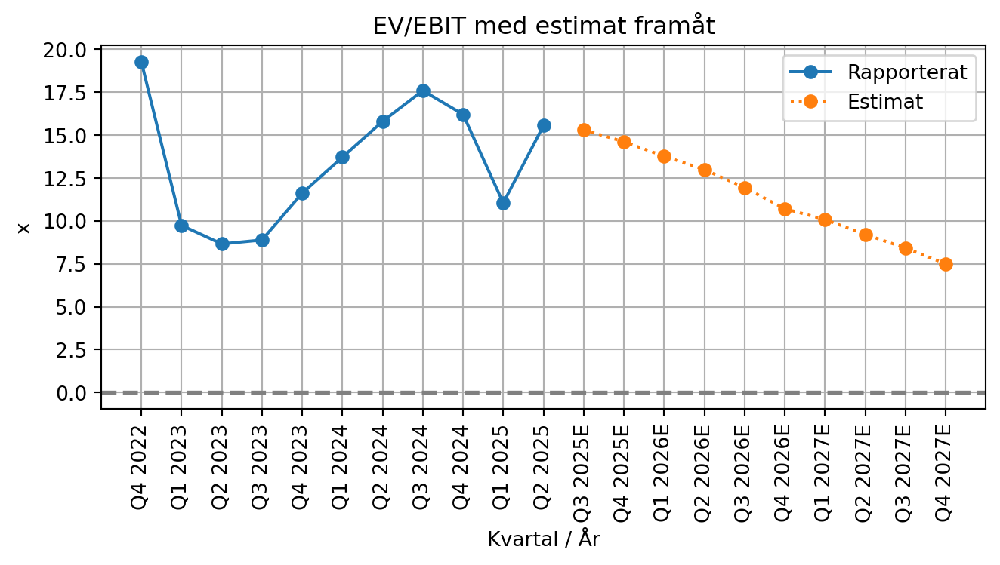
EV kommer att över tid att minska då kassaflödet används för att återköpa aktier och skuldsättningen förväntas att minska samtidigt som justerad ebit förväntas stabiliseras och bli 160 miljoner i slutet av 2027E.
Om prognosen faller att vi får en ebit marginal framåt på runt 15 procent samt en gradvis tilltagande tillväxt under 2026 och 2027 så ser vi att EV/EBIT blir 7.1x till slutet av 2027E.
Ett bolag som växer med runt 10 procent och har stabila intäkter i en marknadsledande position bör kunna värderas till ev/ebit 16x, men eftersom Enea har kvar att bevisa är det rimligt att ha den på en lägre multipel som 14x fram tills dess. Det innebär att multipelen halveras över 2,5 år. Jag anser även att 14-15x ev/ebit en rimligt nivå givet att det är vad IAR systems handlades till innan det blev uppköpt för 20x ev/ebit under sommaren 2025. En aktie är då värd 150 SEK om 2,5 år vilket diskonterat med 12 procents ränta är 109 sek idag.
109 sek i intrinsic value ger på dagens kurs 76 sek en margin of safety på 30 procent.
Och om allt skiter sig?
Om vi inte får den tilväxten i nätverk och säkerhet som tänkt och omsättningenstillväxten inom segmenten landar på 0 procent under 2025, 2026 och 2027 så blir justerade ebit 134 miljoner. Istället för 7.1x ev/ebit landar vi då på 9.1x vilket motiverar en multipel på säg 11x ev/ebit, vilket resulterar i att en aktie är värd 92 sek om 2,5 år. Diskonterar vi det med 12 procents ränta landar fair value på 67 sek aktien idag.
Det som är positvit är att Enea oavsett kommer att ha spenderat kassaflöden på att stabilisera sin finansiella ställning och kommer troligen ha en bättre grund att stå på jämfört med just nu. Jag bedömer nedsidan inte särskilt stor från dessa nivåer.
Diskussion
Enea är ett bolag som kan uppfattas som en turnaround, siffrorna ser röriga ut med dessa stora balansräkning och röda siffror. Med ett par justeringar som reflekterar underliggande verksamhet går det att se ett starkt kassaflöde och en renodling som rör sig i rätt riktning. Framåt behövs inga underverk för att nå bra resultat. Med extrem volatilitet i finansiella nettot skrämer det iväg investerare. Över tid ska detta ordna upp sig och Enea kommunicerar att det är något som bolaget jobbar med för att få ordning på över tid, men det är att räkna med justeringar under kort sikt.
Problemet som Enea har är bristen på historik. Det finns lite historik, speciellt stabil historik i dess nya skick där networks och säkerhet i centrum. Ny vd innebär att ett track record behöver stabiliseras.
Värderingen ser okej ut, med sina starka kassaflöden går det se att framtiden kommer antagligen bjuda på en högre värdering framåt. Med lättare jämförelsekvartal.
Det kan hända att det är för tidigt att investera i Enea, att det fortsätt kommer att vara stökigt med finansiella nettot som slår hårt och/eller att det tar tid för den nya strategin som Salmi trycker ut i organisationen att faktiskt ge resultat.
En potentiell trigger i caset är att utrullningen av 5G tar fart och Enea får en uppgraderingscykel som skulle ge boost i tillväxten.
Kapitalstrukturen har blivit bättre under Salmi, nu består större delen av lånen av långa räntebärande lån som troligen har en lägre räntekostnad än det som var tidigare med princip allt på kortfristiga skulder.
Hur kan jag förlora pengar på att investera i Enea? Säkerhet kan gå sämre än vad som ledningen tror framåt. Finansiella valutamotvindarna kan göra att Enea över tid fortsätter ha en längre multipel än väntat. En annan risk är att jag missförstått bolaget och det finns risker som jag själv inte förstår eller räknat på. Om en eller flera av riskerna som lyfts tidigare infaller så kan det innebära förtroende tapp och en försäljning till förlust då min investeringstes inte spelar ut.
Positivt och negativt med Enea
TipPositivt
- Potential för en marginalresa, från dagens 13 procent till norr om 20 procent. Nya intäkter lär ge bra marginaler framåt.
- Nya vd verkar riktigt bra, trovärdig och tydlig
- 70% av intäkterna är återkommande
- Återköp av aktier, ca 100 miljoner om året
- Underliggande kassaflöden är väldigt starka
- Väldigt stark teknik och kanonbra marknadsposition
- Tuffa jämförelsekvartal är förbi, horisonten ser ljus ut
- Övergång till SAAS baserade intäkter
- Svensk härkomst inom en bransch som kommer sätta högre krav på etisk standard framgent
- Potentiell trigger med 5G utrullning
- Potentiellt att Enea blir förvärvat likt IAR systems, det är en maktfaktor att sitta på mjukvara som är så pass kritiskt för nätverken.
- Om USD blir starkare igen kan det ge en positiv uppsida i bolaget då många kontrakt är kritade i dollar.
- Det finns en handfull projekt som kommer att underbygga omsättningstillväxten i Nätverk under kommande året.
- Låg kundkoncentration
CautionNegativt
- Kort historik med nätverk och säkerhet
- Många justeringar som krävs för att få fram representativa siffror för operativa verksamheten – stökigt med mycket avskrivningar som är större än capex. Finansnettot påverkar Enea väldigt mycket, positivt i Q4 2024 och negativt i H1 2025.
- Kort historik med nya vd, saknar fullt förtroende när det inte finns ett track record att luta sig mot
- Inga insynsköp senaste tiden
- Kan vara för tidigt att investera i Enea redan nu
Sammanfattning
Enea har kvalitér som många andra bolag drömmer om med återkommande intäkter och höga bruttomarginaler, men senaste åren har präglats av problem och historiken för de huvudsakliga verksamhetsområden är volatila vilket gör en värdering grumligare än vad som är önskvärt. Det finns helt klart potential i Enea givet att företaget lyckats att stabilisera sin verksamhet och effekter av valuta spelar ut sig. Värderingen tyder på att en säkerhetsmarginal på 30 procent finns, givet att bolaget lyckats att nå sina omsättningsmål och bibehåller sina ebit marginaler framåt.
Min bedömning är att Enea är fint, men det är dålig sikt och finns en del risker. Trots det jag har fått ett förtroende för Teemu Salmi och har köpte en del aktier i Enea.
källor:
https://www.redeye.se/video/event-presentation/1088680/enea-cto-osvaldo-aldao-presents-at-redeye-theme-event-artificial-intelligence-2025-march-13
Kapitalmarknadsdagen 2024:
https://www.enea.com/investors/capital-markets-day-2024/